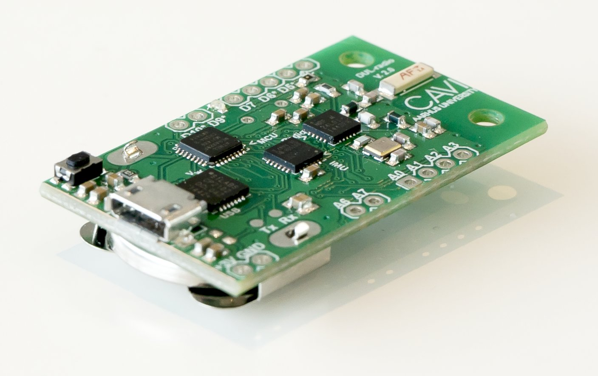
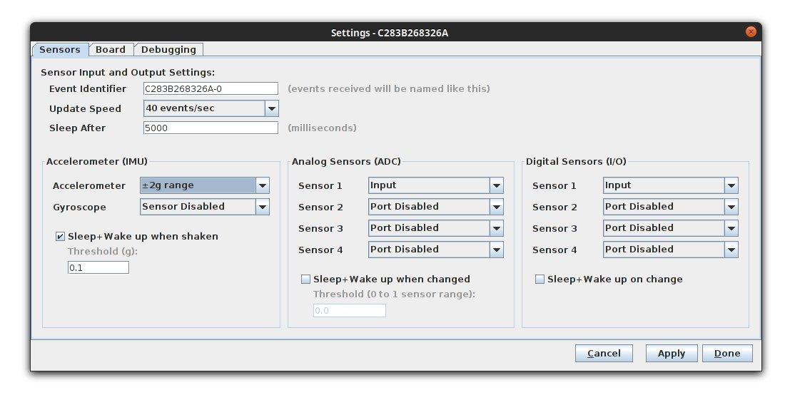
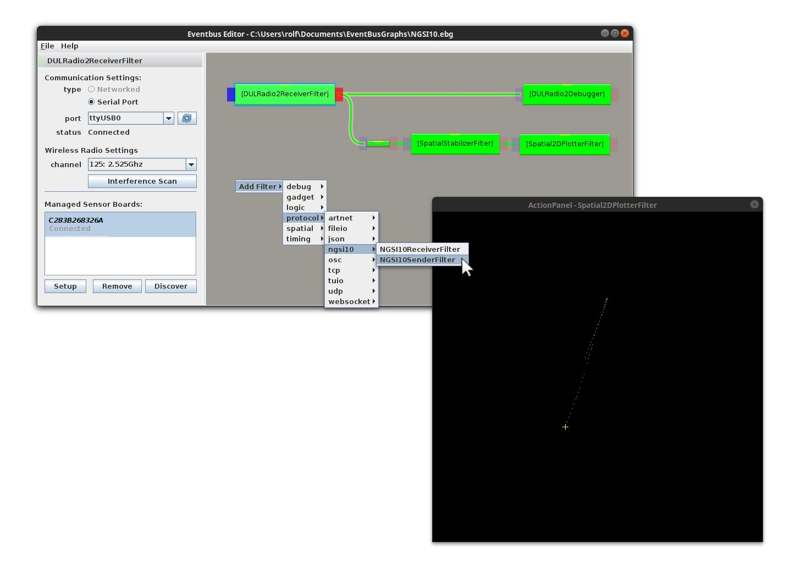

The DUL-radio is a compact, wireless sensor board utilizing the 2.4 GHz frequency band with a communications range comparable to that of Bluetooth radios. In its latest revision, it has gone from a proprietary design to a more open, Arduino-compatible platform. The DUL-radio features an onboard accelerometer with a gyroscope. Additional sensors and other peripherals can be connected to the 5 digital inputs/outputs, 6 analog inputs or the I²C-port.
{kind=link}
The functionality of the board is closely integrated with a piece of software, the EventBus, running on a host computer with a wireless receiver board. The DUL-radio board itself can also function as the receiver when it is connected to the host computer via USB. Multiple sensor boards can be connected to the same receiver. The host computer communicates wirelessly with the sensor boards and all the settings for the boards can be configured in the dedicated software.
{kind=link}
Due to the compact board size (44 x 25.4 x 7mm including a button cell battery), the board can be used in many different applications where real time interactive wireless data collection is needed; e.g. wearables, hand-held interaction devices, art installations, ubiquitous devices for monitoring and statistics.
Since battery life is crucial in many applications, it is possible to set up the DUL-radio for data sampling at rates ranging from 40 samples per second to as little as 1 sample per day. At low sample rates the expected run-time on a button cell can even extend to several years.
The host software, EventBus, allows for communication from and to the DUL-radio sensor board as well as interconnectivity with other services or programs, locally or remote via a local network or even via the Internet.
{kind=link}
In the EventBus interface it is possible to easily configure, modify and filter the incoming data stream in a very flexible manner before it is sent to the final destination(s). The filters can be selected from a list of predefined, configurable filters and outputs including an output that converts the data to the NGSI9/10-protocol.
Other data sources, like incoming events from TUIO or OSC devices, can also be converted to NGSI10 and the system has configurable visualization tools for viewing and debugging the data on screen. It is easy to rapidly prototype by simply dragging connection lines between the relevant input, conversion and output components in the UI – the system automatically suggests conversions between data formats when they are necessary.
Technical Specifications
The physical layout of the board allows it to be used in many applications where small footprint is a requirement. The following figure shows the board dimensions and mounting information.
Board height is 7mm with the battery holder installed, around 4mm without.
{kind=link}
For optimal transmission range the area immediately surrounding the antenna should be kept fairly clear of any metallic materials. If a case is used it should be made of a material that does not block radio signals.
The board is static discharge sensitive and may become unstable if any of the MCU or radio chip pins are touched during radio transmission. An on-board watchdog system detects and corrects this situation after 8 seconds; however, a case or a wrap of heat-shrink tubing to avoid direct contact is recommended for maximal stability if the board is to be handled by humans during use.
The hardware platform in combination with the the particular sensor software that connects with the Eventbus has the features and capabilities summarized in the following table.
In some cases the hardware platform is capable of more than what the current software package offers – in those cases both the hardware capabilities and the software defaults are listed in the table. It is worth noting that the software is simply an Arduino library and to some extent it allows you to add to, change or extend the features already available.
| Battery life (typical use, button cell) | 93.7 days |
|---|---|
| Battery life (all out crazy) | 5 days |
| Data acquisition speed | 0.125Hz – 40Hz (typical) |
| Analog Inputs | 0 to 6 (4 default) (A0-3 + A6, A7) |
| Digital I/O | 0 to 7 (4 default) (DIO5-7, DIO9, DIO10; PWM@5,6,9,10) |
| Accelerometer | 3-axis, ±16g |
| Gyroscope | 3-axis, ±2000deg/s |
| Magnetometer (compass) | 3-axis (only with mpu6090 option) |
| Arduino compatible | Yes |
| USB FTDI serial port | Yes (115200 baud default, 1mbps max) |
| USB power | Yes (either USB or battery, select via jumper) |
| In-circuit serial programming | Yes (standard Arduino ICSP plug) |
| Breadboard mountable | Yes |
| BlueTooth LTE support | Some (BT LTE unsolicited advertisements possible) |
| Recommended Voltage | 1.9-3.46V (abs. max 3.6V), IMU works from: 2.375V to max Radio works from: 1.9V to max |
| Battery Indicator | Yes (voltage readable via wireless) |
| Chip Temperature Indicators | 2 (CPU and Gyro, ~1deg precision) |
| Lost packet retransmission | Some (partial, like UDP, only for config) |
| On-Board LED | 1 (one LED on pin D7) |
| System Clock | Dynamic: 8MHz and 4MHz depending on battery level (optionally up to 16MHz via external clock) |
| Size | 2.54x4.4x0.7cm |
| Screw holes | 2 |
| Wireless Radio Range Under realistic conditions | Radio power, with high gain receiver: Min: 1.5m, Low: 2.5m, High: 5m, Max: 9m |
| Frequencies | 2.4GHz-2.525GHz (124 channels, 1 discovery channel) |
| Radio Bandwidth | 1Mbps (2Mbps possible) |
| Subchannel configuration | Automatic (at least 5 subchannels) |
| Configuration Setup | Automatic discovery. Automatic upload during use |
| Protocol | Proprietary binary |
| EventBus support | Since r713 |
| Receiver | Any Arduino & nrf24L01+ (Serial via USB) |
| Software License | Open source : GPLv3 |
Additional Technical Details (PDF)
Quick Start Guide
- Install Battery in Board. Be careful about polarity.
- Connect the receiver to an USB port
- Open EventBus and add a DULRadio2ReceiverFilter to graph
- Hit "Discover" and select the DUL-Radio board to connect to
- The board and data flow can now be configured